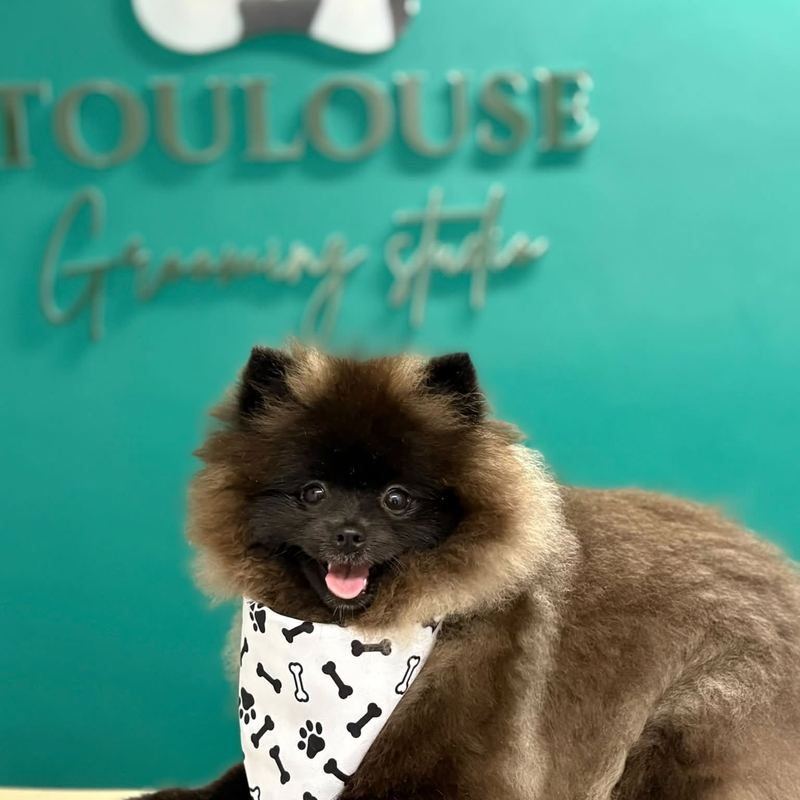
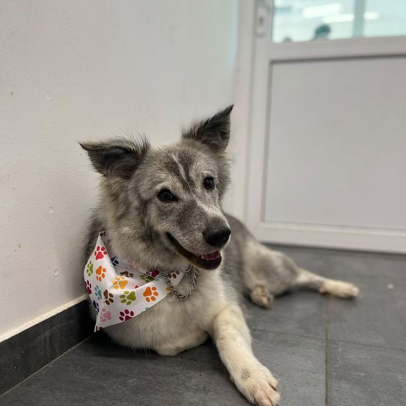
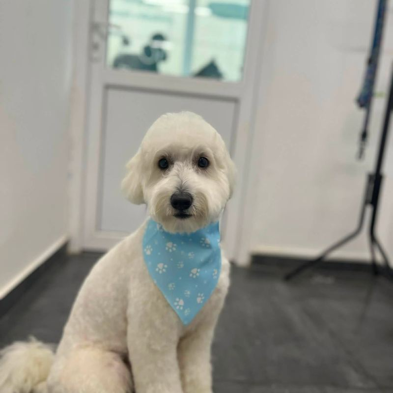
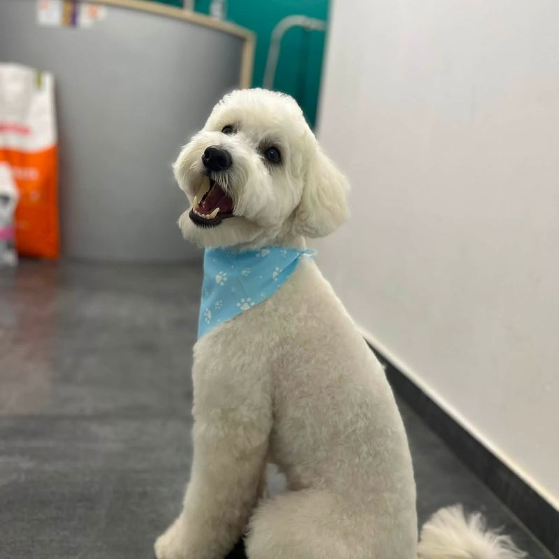
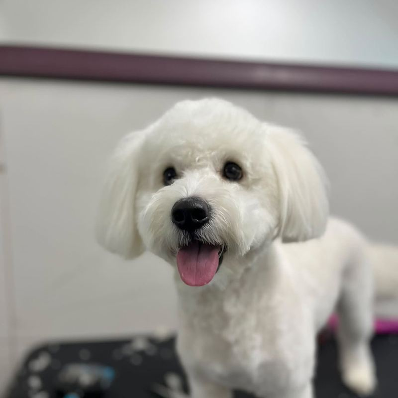

Toaletaj cu răbdare pentru câinii din Brașov
Salon de grooming pe Strada Uranus 9, de la toaletaj standard la pachete SPA, pentru câini de talie mică și medie.
Program zilnic mai jos

Așa pleacă ei acasă
Full body clip se încheie cu parfum și un accesoriu. În pozele salonului îi vezi cu bandane în trei imprimeuri: lăbuțe colorate, oscioare și lăbuțe albastre.




Listă de prețuri
Pachete pentru câini de talie mică și medie. Fiecare pachet include spălat, tăiat gheruțe, curățat urechi și curățat interdigital.
| Pachet | Talie mică, sub 10 kg | Talie medie, 10–20 kg |
|---|---|---|
| Full body clipSpălat, tuns, aranjat, tăiat gheruțe, curățat urechi și interdigital, parfumat + accesoriu | Talie mică sub 10 kg160 lei | Talie medie 10–20 kg190 lei |
| Retouch (întreținere)Spălat, retuș cap și lăbuțe, tăiat gheruțe, curățat urechi și interdigital | Talie mică sub 10 kg130 lei | Talie medie 10–20 kg160 lei |
| Blană scurtăSpălat, retuș, deshedding, tăiat gheruțe, curățat urechi și interdigital | Talie mică sub 10 kg120 lei | Talie medie 10–20 kg150 lei |
Descâlcit150 lei/orăServiciu extra, pentru blana încâlcită
Ce spun clienții
„Atmosfera este plăcută, personalul este amabil și profesionist, iar cățelul meu pleacă de fiecare dată fericit, curat și aranjat.”
„Personalul este foarte amabil, răbdător și atent la nevoile animalelor. Tunsul a fost realizat impecabil, iar Pufi a ieșit de acolo curată, frumoasă și relaxată.”
„Se vede imediat că aici se lucrează cu multă experiență, răbdare și dragoste pentru animale.”
„Cățelul a fost tratat cu multă atenție și răbdare, iar rezultatul mi-a depășit așteptările. Recomand din suflet!”
„Un salon de excepție și cu oameni profesioniști, care se ocupă de animalul tău ca și cum ar fi al lor, recomand cu toată încrederea.”
„El e Max și se poate vedea cât de fericit era după un tuns mirific, recomand cu drag”
Program și adresă
| Luni | 9:00–20:00 |
|---|---|
| Marți | 9:00–20:00 |
| Miercuri | 9:00–20:00 |
| Joi | 9:00–20:00 |
| Vineri | 9:00–20:00 |
| Sâmbătă | 9:00–18:00 |
| Duminică | 10:00–15:00 |
Strada Uranus 9, Bloc 9
500361 Brașov
Strada Uranus 9, Bloc 9
Brașov
Acum și în București
Toulouse crește: ne extindem și în București, cu grooming la domiciliu. Pentru detalii și programări, scrie-ne în privat.
Scrie-ne despre București